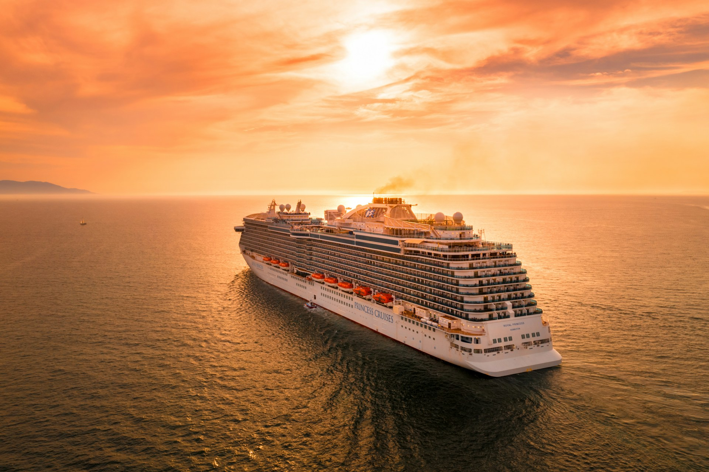
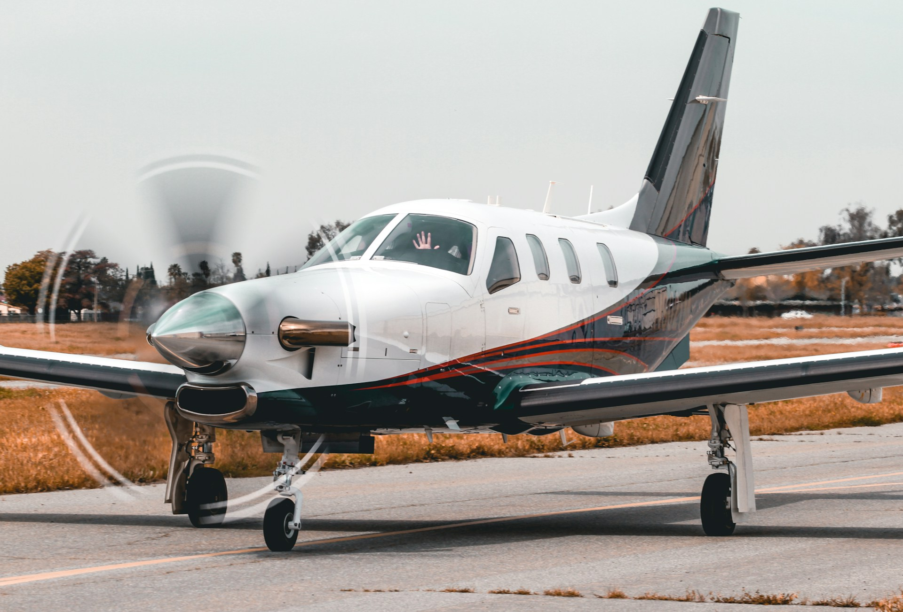
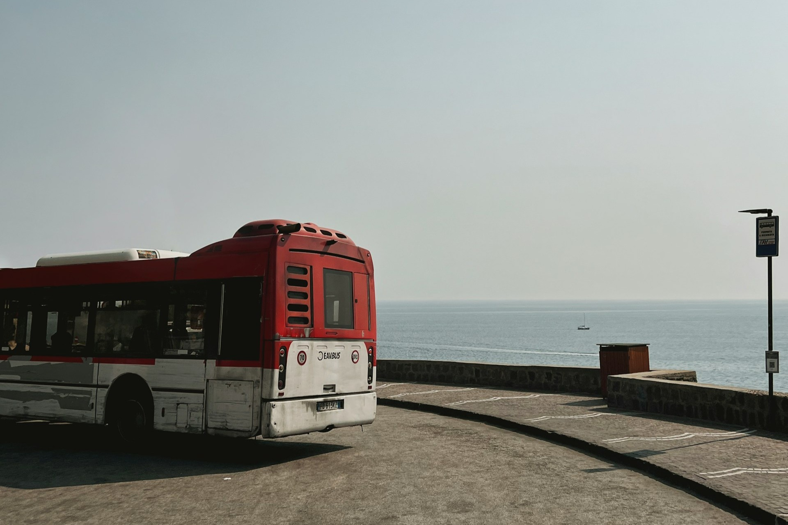

From air to island trails - getting here and exploring is a breeze.
Arrival & Airport Access
Fly in, cruise through, or coast in style.
Most visitors arrive by air via Taniti's small airport, which currently serves small jets and propeller planes. Expansion plans are underway to welcome larger jets soon. A weekly cruise ship also docks at Yellow Leaf Bay for a quick overnight stay.


Island Transportation
Easy to navigate, however you roll.
Public buses serve Taniti City daily, while private buses cover the rest of the island. Taxis, rental cars, and bike rentals (helmets required!) are all available. Taniti City is flat, walkable, and perfect for exploring on foot—especially around the popular Merriton Landing area.
